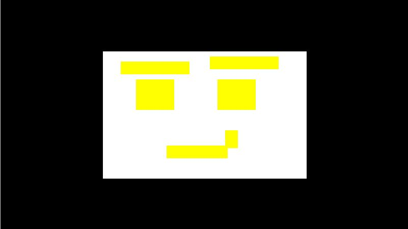

QRLang - Drawing
Sample:

Code:
$rightEyebrow = 24
draw{
drawbox(40,20,80,50,7)
//eyes
drawbox(53, 31, 15, 12, 6)
drawbox(85, 31, 15, 12, 6)
//eyebrows
drawbox(47, 24, 27, 5, 6)
drawbox(82, $rightEyebrow, 27, 5, 6)
//mouth
drawbox(65, 57, 24, 5, 6)
drawbox(88, 51, 5, 7, 6)
}
update{
if(keyup){
$rightEyebrow = 22
} else {
$rightEyebrow = 24
}
}
Compressed Code:
$A%24DRDB40/20/80/50/7RBDB53/31/15/12/6RBDB85/31/15/12/6RBDB47/24/27/5/6RBDB82/$A/27/5/6RBDB65/57/24/5/6RBDB88/51/5/7/6RB.UPIFKURB*$A%22.EL*$A%24..